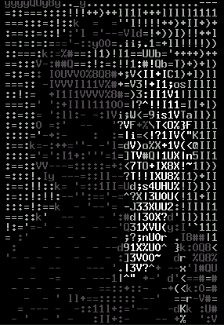

陈嘉纬的博客
欢迎来到陈嘉纬的中文博客网页！
记录生活·求知分享
邮箱：garychen070319@gmail.com或13336039319@163.com
QQ：3087534304 微博：tbbt_slc.
大事记：青甘大环线旅游（7.26.2020启程）
关于我的旅途
旅途大概：青海-甘肃环线七日游
旅途日期：7.26启程 8.2早归
旅途人数：7人，我一家四口，和朋友一家三口
总体行程预览：
7 月 26 日 杭州—西宁：接机，入住酒店，周边逛逛。
7 月 27 日 西宁--塔尔寺--拉脊山--日月山--倒淌河---青海湖—茶卡
7 月 28 日 茶卡盐湖—德令哈--翡翠湖—大柴旦
7 月 29 日 大柴旦--南八仙雅丹--当金山--阿克塞（石油小镇）--阳关景区--敦煌
7 月 30 日 敦煌---莫高窟---鸣沙山月牙泉---敦煌
7 月 31 日 敦煌--瓜州滩--嘉峪关城楼--张掖七彩丹霞--张掖
8 月 1 日 张掖--扁都口花海--祁连大草原---门源油菜花海--黑泉水库--西宁
8 月 2 日 早餐后、收拾整理去机场返程
现在离启程还有一周多时间，愿一切正常进行！